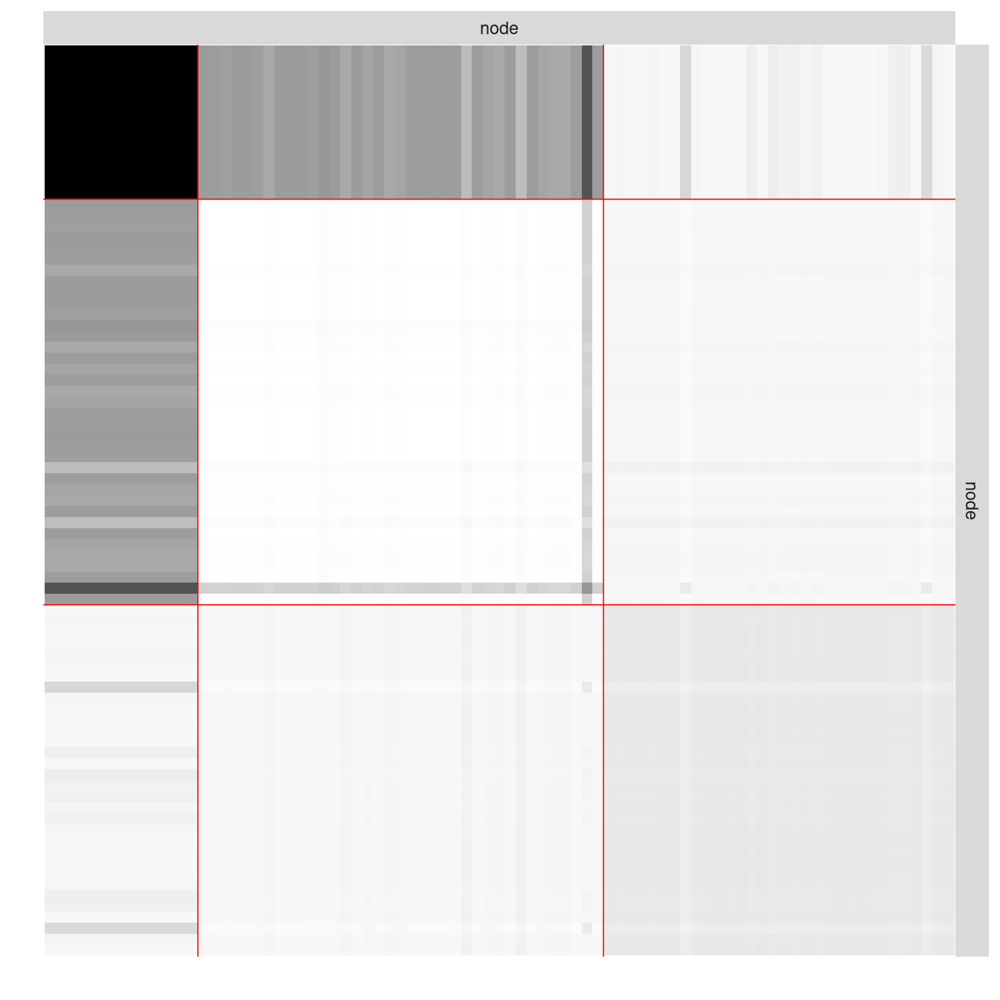
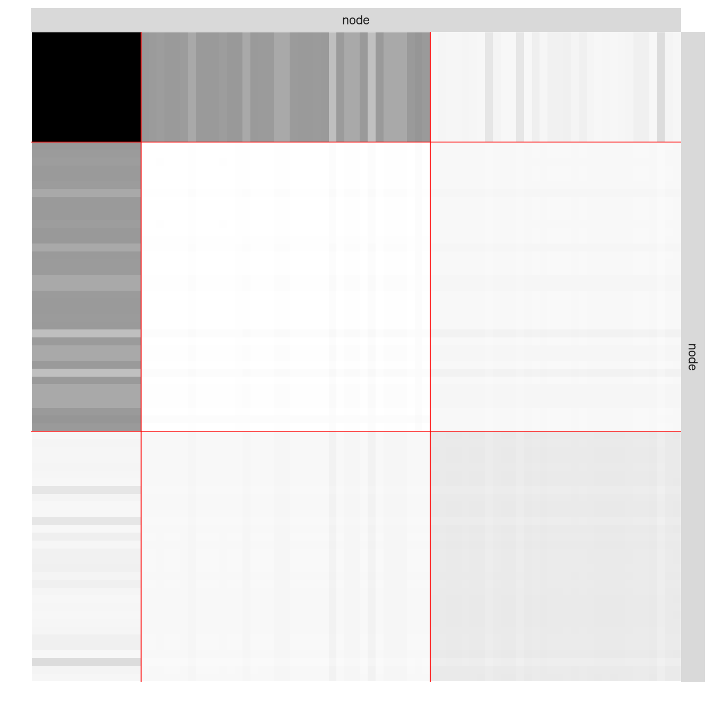
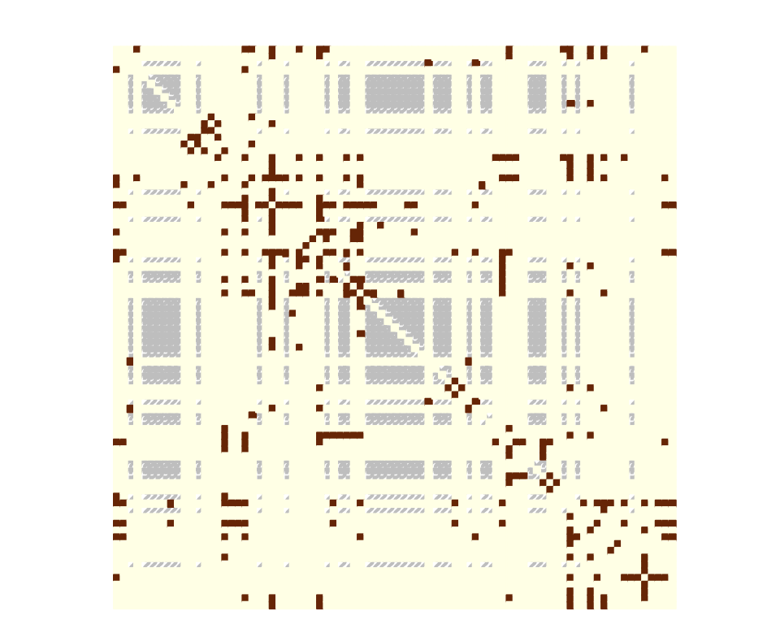

data("war")missSBM
When a network is partially observed (here, NAs in the adjacency matrix rather than 1 or 0 due to missing information between node pairs), it is possible to account for the underlying process that generates those NAs. ‘missSBM’, presented in ‘Barbillon, Chiquet and Tabouy’ (2022) adjusts the popular stochastic block model from network data observed under various missing data conditions, as described in ‘Tabouy, Barbillon and Chiquet’ (2019).
The War Network
The war data set comes with the missSBM package.
This data set contains a list of two networks (belligerent and alliance) where the nodes are countries; an edge in the network belligerent means that the two countries have been at war at least once between years 1816 to 2007; an edge in network alliance means that the two countries have had a formal alliance between years 1816 and 2012. The network belligerent have less nodes since countries which have not been at war at all are not considered.
On the top of the two networks, two covariates were considered. One covariate is concerned with military power of the states and the other is concerned with trade exchanges between country. In the following, the focus is on the network war$belligerent, which is provided as an igraph object.
par(mar = c(0, 0, 0, 0))
plot(
war$belligerent,
vertex.shape = "none",
vertex.label = V(war$belligerent)$name,
vertex.label.color = "steel blue",
vertex.label.font = 1.5,
vertex.label.cex = .6,
edge.color = "gray70",
edge.width = 2
)
To proceed with the analysis, extract the adjacency matrix of the network, a covariate on the vertices describing the military power of each country, and a covariate on the dyads describing the intensity of trade between two countries.
belligerent_adjacency <- as_adj(war$belligerent, sparse = FALSE)
belligerent_power <- war$belligerent$power
belligerent_trade <- war$belligerent$tradeGenerating Missing Data
Even though the dataset was complete, we can assume that some data may be missing for the sake of illustration.
More specifically, the data collection may be missing for some countries in the sense that data were collected comprehensively for a subset of countries and for the other countries we only observe their edges with the first subset and not within them. Thus, the sampling is node-centered and collects edges information accordingly (there will be a block of missing data on the diagonal of the adjacency matrix). To this end we rely on the function observeNetwork in missSBM.
partlyObservedNet_war <- missSBM::observeNetwork(
belligerent_adjacency, sampling = "node", parameters = .8
)
corrplot(partlyObservedNet_war,
is.corr = FALSE,
tl.pos = "n",
method = "color",
cl.pos = "n",
na.label.col = "grey",
mar = c(0,0,1,0)
)
Estimation with Missing Data
We can now adjust a Stochastic Block Model with the function estimateMissSBM under this type of sampling: by default, we use a forward/backward (split and merge) strategy on the clustering to avoid local minimal and get a robust Integrated Classification Likelihood Criterion, commonly used to perform model selection. This will make the choice of the number of group/block more robust. The exploration type (forward, backward, both or none, and number of iteration can be tuned via the control argument).
vBlocks <- 1:5
collection_sbm <- estimateMissSBM(partlyObservedNet_war, vBlocks, sampling = "node")Estimation on Fully Observed Network
We would like to compare our results with the clustering obtained on the fully observed network. To this end, we adjust a collection of SBM on the original adjacency matrix.
collection_sbm_full <- estimateMissSBM(
belligerent_adjacency, vBlocks, sampling = "node", control = list(iterates = 2)
)As expected, the ICL on the fully observed network is better. But more interestingly, the number of groups selected may differ in the the presence of missing data.
rbind(
data.frame(ICL = collection_sbm_full$ICL, nbBlocks = vBlocks, type = "full"),
data.frame(ICL = collection_sbm$ICL, nbBlocks = vBlocks, type = "missing")
) %>%
ggplot(aes(x = nbBlocks, y = ICL, group = type, color = type)) +
labs(title = "Model selection", x = "#blocks", y = "Integrated Classification Likelihood") +
geom_line() +
theme_bw()
Indeed, two classes found on the fully observed network fuse in the SBM fitted on the partially observed network.
table(
collection_sbm$bestModel$fittedSBM$memberships,
collection_sbm_full$bestModel$fittedSBM$memberships
)
1 2 3
1 14 0 0
2 0 37 0
3 0 0 32The model finally fitted on the network data can be represented thanks to a plot method applying on objects with class SBM.
par(mfrow = c(1,2))
plot(collection_sbm$bestModel, type = "expected")
plot(collection_sbm_full$bestModel, type = "expected")
Estimation with Covariates
First consider a covariate reflecting the military power of the country, hence associated to the nodes. We typically expect a part of the network to be explained by this covariate. We run the inference on the fully observed network.
vBlocks <- 1:3
collection_sbm_power_full <- estimateMissSBM(
belligerent_adjacency,
vBlocks = vBlocks,
sampling = "node",
covariates = list(belligerent_power)
) Note that by default, the distribution of edges depends on the covariate(s) in any are included in the model.
The covariate provided as a vector is transferred on edges through an \(\ell_1\) similarity: for edge \((i,j)\) the associated covariate is defined by \(|x_i-x_j|\) where \(x_i\) denotes the covariate for node \(i\). Another similarity measure could be provided via the option similarity.
The estimated effect of the covariate is obtained through
collection_sbm_power_full$bestModel$fittedSBM$covarParam[1] -12.27494The covariate could be responsible for the sampling. The state with bigger military power are more likely to be fully observed than the others. We will simulate this sampling. An intercept is considered by default in the sampling model.
nWar <- nrow(belligerent_adjacency)
parameters_sample <- 600
sampleNet_power_miss <- missSBM::observeNetwork(
belligerent_adjacency,
sampling = "covar-node",
parameters = parameters_sample,
covariates = list(belligerent_power),
intercept = -2
)
observedNodes <- !is.na(rowSums(sampleNet_power_miss))
boxplot(
1/(1 + exp(-cbind(1,belligerent_power) %*% c(-2, parameters_sample))) ~ observedNodes,
ylab = "mil power", xlab = "observed node"
)
corrplot(sampleNet_power_miss,
is.corr = FALSE,
tl.pos = "n",
method = "color",
cl.pos = "n",
na.label.col = "grey",
mar = c(0,0,1,0)
)
Then, we can estimate the model by setting the sampling to be covar-node. We can still choose whether to consider or not the covariate in the SBM.
collection_sbm_power_miss <- estimateMissSBM(
sampleNet_power_miss,
vBlocks = vBlocks,
sampling = "covar-node",
covariates = list(belligerent_power)
)Then we can access the estimated sampling parameters,
collection_sbm_power_miss$bestModel$fittedSampling$parameters[1] -2.296231 844.448133and the parameters in the SBM associated with the covariate.
collection_sbm_power_miss$bestModel$fittedSBM$covarParam[1] -4.879173